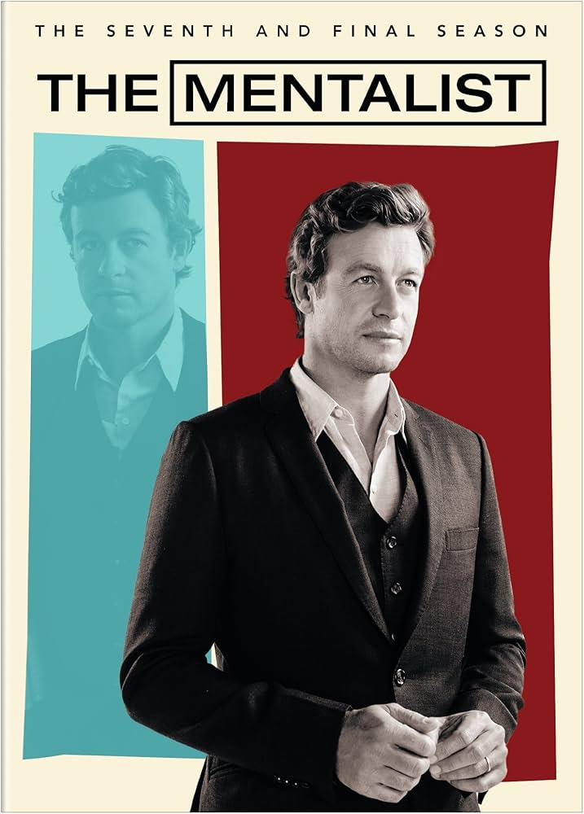

The Mentalist

The Mentalist é uma série de drama e mistério que acompanha o agente da CIA Lisbon e sua equipe enquanto resolvem casos complexos usando suas habilidades de leitura de pessoas.
Patrick Jane (Simon Baker) é um consultor independente para o California Bureau of Investigation (CBI). Ex-golpista, antes disso ele fingia ser um psíquico e médium. Cinco anos antes dos eventos do episódio piloto, Jane foi à televisão e disse que suas habilidades ajudaram a polícia a fazer o perfil de um serial killer chamado Red John. Este, então, furioso com a mentira, vingou-se matando a mulher e a filha de Patrick. Ele, então, juntou-se à equipe da Agente Teresa Lisbon (Robin Tunney) e utiliza sua alta capacidade de observação para ajudar a encontrar o assassino de sua família.
Informações principais
- Gênero: Drama, mistério e suspense
- Ano de lançamento: 2008
- Temporadas: 5
- Episódios: 100
- Criador: Bruno Heller
Curiosidades
- Identidade não planejada: O criador Bruno Heller revelou que a verdadeira identidade de Red John não estava definida desde o primeiro episódio. Havia cerca de trêsou quatro possibilidades em aberto durante as primeiras temporadas
- Improvisação e hábitos: O hábito de Wayne Rigsby (Owain Yeoman) estar sempre comendo em cena nasceu de uma mania real do próprio ator nos sets
- Referências no título: Todos os episódios da primeira até a quinta temporada possuem alguma referência à cor vermelha no título, em alusão ao antagonista Red John.